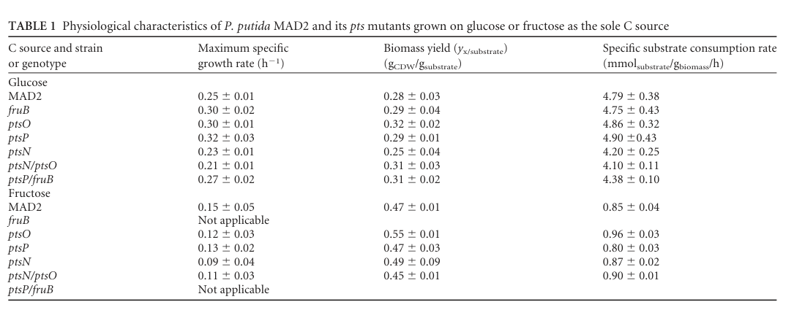

Flavoprotein (catalytic) subunit of succinate dehydrogenase (respiratory Complex II) in Pseudomonas putida KT2440. SdhA carries a covalently bound FAD cofactor and the succinate/fumarate active site, catalysing the oxidation of succinate to fumarate with transfer of electrons into the membrane quinone pool (EC 1.3.5.1). This reaction couples the tricarboxylic acid (TCA) cycle to the aerobic respiratory electron transport chain. SdhA forms the soluble catalytic head of the four-subunit enzyme together with the iron-sulfur subunit SdhB (PP_4190) and the membrane anchor subunits SdhD (PP_4192) and SdhC (PP_4193), to which it is peripherally attached on the cytoplasmic face of the inner (plasma) membrane. FAD incorporation (flavinylation) depends on the accessory assembly factor SdhE.
| GO Term | Evidence | Action | Reason |
|---|---|---|---|
|
GO:0000104
succinate dehydrogenase activity
|
IEA
GO_REF:0000118 |
ACCEPT |
Summary: SdhA is the flavoprotein catalytic subunit of succinate dehydrogenase (Complex II); succinate dehydrogenase activity is its core molecular function.
Reason: Strongly supported by family/domain assignment (TIGR01816 sdhA_forward, Pfam FAD_binding_2, FRD/SDH subfamily), conserved active-site and FAD-binding residues, and UniProt EC 1.3.5.1. Consistent across all lines of evidence.
|
|
GO:0005886
plasma membrane
|
IEA
GO_REF:0000120 |
ACCEPT |
Summary: SdhA is a peripheral membrane protein attached to the cytoplasmic (inner) face of the inner/plasma membrane as part of the membrane-bound Complex II.
Reason: Matches UniProt subcellular location (Cell inner membrane; peripheral membrane protein; cytoplasmic side). In Gram-negative bacteria the inner membrane is the GO plasma membrane.
|
|
GO:0006099
tricarboxylic acid cycle
|
IEA
GO_REF:0000120 |
ACCEPT |
Summary: Succinate dehydrogenase catalyses the succinate-to-fumarate step of the TCA cycle; this is a core biological process for SdhA.
Reason: Supported by UniProt pathway annotation (tricarboxylic acid cycle; fumarate from succinate, step 1/1) and conserved enzyme function.
|
|
GO:0008177
succinate dehydrogenase (quinone) activity
|
IEA
GO_REF:0000120 |
ACCEPT |
Summary: This is the precise quinone-coupled reaction (succinate + quinone = fumarate + quinol, RHEA:40523, EC 1.3.5.1) catalysed by the holo-enzyme to which SdhA contributes the catalytic flavoprotein head.
Reason: Directly matches the UniProt CATALYTIC ACTIVITY (RHEA:40523) and EC 1.3.5.1. Most informative molecular-function term for the complex's overall reaction.
|
|
GO:0009055
electron transfer activity
|
IEA
GO_REF:0000120 |
KEEP AS NON CORE |
Summary: SdhA participates in electron transfer, passing electrons abstracted from succinate via FAD toward the iron-sulfur clusters of SdhB and the quinone pool.
Reason: Biologically true but more generic than the specific succinate dehydrogenase (quinone) activity that captures SdhA's core function. Retain as supporting/non-core rather than primary.
|
|
GO:0009061
anaerobic respiration
|
IEA
GO_REF:0000118 |
MARK AS OVER ANNOTATED |
Summary: This subunit is the forward/aerobic succinate dehydrogenase flavoprotein (TIGR01816 sdhA_forward), not the fumarate reductase used in anaerobic respiration.
Reason: UniProt notes that two distinct FAD enzymes interconvert fumarate and succinate, with fumarate reductase (FrdA) used in anaerobic growth and succinate dehydrogenase used in aerobic growth. The forward SdhA is assigned to aerobic respiration; this TreeGrafter-propagated anaerobic respiration term reflects the broader SdhA/FrdA family and over-annotates the aerobic SdhA.
|
|
GO:0016491
oxidoreductase activity
|
IEA
GO_REF:0000002 |
KEEP AS NON CORE |
Summary: Generic parent of the specific succinate dehydrogenase (quinone) activity already annotated.
Reason: Correct but uninformative high-level term; subsumed by the specific EC 1.3.5.1 annotation. Retain as non-core.
|
|
GO:0016627
oxidoreductase activity, acting on the CH-CH group of donors
|
IEA
GO_REF:0000120 |
KEEP AS NON CORE |
Summary: Accurate intermediate-level description of the chemistry (oxidation of the succinate CH-CH bond to the fumarate C=C bond), but less specific than succinate dehydrogenase (quinone) activity.
Reason: Correct grouping term but subsumed by the specific MF term; keep as non-core supporting annotation.
|
|
GO:0022900
electron transport chain
|
IEA
GO_REF:0000120 |
ACCEPT |
Summary: Complex II feeds electrons from succinate into the respiratory quinone pool, contributing to the aerobic electron transport chain.
Reason: Supported by UniProt (electron transport keyword) and the established role of Complex II linking the TCA cycle to respiration.
|
|
GO:0050660
flavin adenine dinucleotide binding
|
IEA
GO_REF:0000120 |
ACCEPT |
Summary: SdhA binds a (covalently attached) FAD cofactor essential for succinate oxidation.
Reason: Supported by UniProt COFACTOR (FAD), multiple conserved FAD-binding residues, the Tele-8alpha-FAD histidine modified residue, and SdhE-dependent flavinylation.
|
|
GO:0160308
succinate dehydrogenase (FAD) activity
|
IEA
GO_REF:0000002 |
ACCEPT |
Summary: Describes the FAD-dependent succinate->fumarate half-reaction occurring at the SdhA flavin site, prior to electron transfer to quinone.
Reason: Accurately captures the FAD-coupled catalytic step intrinsic to the SdhA subunit; complementary to the holo-enzyme quinone-coupled term GO:0008177. Both are valid and informative.
|
Q: Has the SdhA-SdhBCD Complex II of P. putida KT2440 been biochemically characterised (kinetics, FAD content, quinone specificity), and does it show any fumarate reductase activity in vitro?
Experiment: Purify the P. putida KT2440 SdhABCD complex and measure succinate:quinone oxidoreductase kinetics and FAD flavinylation status, with and without SdhE, to confirm the conserved mechanism in this organism.
The research report should be a detailed narrative explaining the function, biological processes, and localization of the gene product. Citations should be given for all claims.
You should prioritize authoritative reviews and primary scientific literature when conducting research. You can supplement
this with annotations you find in gene/protein databases, but these can be outdated or inaccurate.
We are specifically interested in the primary function of the gene - for enzymes, what reaction is catalyzed, and what is the substrate specificity? For transporters, what is the substrate? For structural proteins or adapters, what is the broader structural role? For signaling molecules, what is the role in the pathway.
We are interested in where in or outside the cell the gene product carries out its function.
We are also interested in the signaling or biochemical pathways in which the gene functions. We are less interested in broad pleiotropic effects, except where these elucidate the precise role.
Include evidence where possible. We are interested in both experimental evidence as well as inference from structure, evolution, or bioinformatic analysis. Precise studies should be prioritized over high-throughput, where available.
The gene symbol sdhA in Pseudomonas putida KT2440 is unambiguously linked to PP_4191, annotated as the succinate dehydrogenase flavoprotein subunit (SdhA), and occurs with the other complex II subunits SdhB (PP_4190), SdhD (PP_4192), and SdhC (PP_4193) in KT2440. This mapping matches the UniProt-provided identity (Q88FA7) as a succinate dehydrogenase flavoprotein subunit (EC 1.3.5.1). (chavarria2012regulatorytasksof pages 3-4, chavarria2012regulatorytasksof media b14b64f4, chavarria2012regulatorytasksof media 8dabbe7d)
Succinate dehydrogenase (SDH; respiratory complex II) is a central bioenergetic enzyme that functionally couples the tricarboxylic acid (TCA) cycle to the aerobic respiratory electron transport chain. In bacteria and mitochondria, complex II comprises a soluble catalytic “head” and membrane anchor components that connect catalysis to the quinone pool. (bouillaud2023inhibitionofsuccinate pages 3-5, mcneil2012sdheisa pages 1-2)
Within this complex, SdhA is the flavoprotein catalytic subunit that carries the flavin cofactor and hosts the succinate/fumarate active-site chemistry. (bouillaud2023inhibitionofsuccinate pages 3-5, mcneil2012sdheisa pages 1-2)
The canonical SDH reaction (EC 1.3.5.1) is the oxidation of succinate to fumarate:
The electrons are transferred into the membrane quinone pool by coupled reduction of quinone:
Thus, SdhA’s primary substrate specificity is toward succinate (as the electron donor in the forward SDH direction) and fumarate (in the reverse fumarate reductase direction in organisms/conditions where reversal occurs), with coupling to the quinone pool as electron acceptor via the rest of complex II. (bouillaud2023inhibitionofsuccinate pages 3-5)
Complex II function depends on redox cofactors:
A key mechanistic concept for bacterial SdhA is flavinylation (incorporation/attachment of FAD into the SdhA subunit). In a bacterial model system, SdhA requires an accessory protein SdhE for FAD incorporation; SdhE interacts with SdhA, binds FAD, and is required for SdhA flavinylation and SDH activity. (mcneil2012sdheisa pages 4-5, mcneil2012sdheisa pages 1-2)
Although this SdhE-dependent maturation evidence is not from P. putida directly, SdhE is described as conserved across diverse proteobacteria, supporting inference that P. putida SdhA likewise depends on proper flavinylation for activity. (mcneil2012sdheisa pages 1-2)
Complex II is described as a membrane-spanning redox enzyme with a soluble catalytic side containing the flavoprotein subunit (SdhA) and membrane subunits that inject electrons into quinone in the membrane. (bouillaud2023inhibitionofsuccinate pages 3-5)
Consistent with this, bacterial experimental work localized SdhA to the membrane-associated complex, reflecting its function as part of a membrane respiratory complex rather than a freely soluble cytosolic enzyme. (mcneil2012sdheisa pages 4-5)
In KT2440, the complex II subunits are explicitly mapped as:
This supports annotation of PP_4191/Q88FA7 as the catalytic complex II flavoprotein subunit within the canonical SDH architecture in P. putida KT2440. (chavarria2012regulatorytasksof media b14b64f4, chavarria2012regulatorytasksof media 8dabbe7d)
A 2023 review synthesizes modern understanding of SDH/complex II as a redox enzyme connecting succinate oxidation to quinone reduction, emphasizing its four-subunit architecture and centrality to energy metabolism, while also discussing assay approaches and the energetic consequence that complex II does not pump protons (unlike complexes I/III/IV), implying its control is primarily redox/substrate/quinone-state dependent. (bouillaud2023inhibitionofsuccinate pages 3-5)
While this review focuses on SDH inhibition in eukaryotic contexts, its biochemical statements about the enzyme’s reaction chemistry and architecture are directly applicable to bacterial SDH (including P. putida). (bouillaud2023inhibitionofsuccinate pages 3-5)
A 2023 study on microaerobic cultivation of P. putida KT2440 for succinate production provides direct KT2440 evidence that:
Together, these findings operationalize sdhA (and sdhAB) as a tunable node in P. putida metabolic engineering for improved organic acid accumulation under oxygen-limited regimes. (mutyala2023citratesynthaseoverexpression pages 10-11)
Although 2024 P. putida KT2440 systems-biology papers were retrieved in the search set, the accessible text evidence obtained in this run did not provide explicit, citable sdhA-specific quantitative statements. Therefore, sdhA-focused 2023 KT2440 evidence (above) is the primary recent source for strain-specific regulation and application claims within the current tool-retrieved corpus. (mutyala2023citratesynthaseoverexpression pages 10-11)
In KT2440 succinate bioproduction under microaerobic conditions, sdhA/SDH is relevant because it can consume succinate (reassimilate it into the TCA cycle via succinate oxidation). The 2023 microaerobic cultivation study explicitly frames sdhAB as a target whose downregulation or deletion could improve succinate accumulation and yields in engineered strains. (mutyala2023citratesynthaseoverexpression pages 10-11)
This is a practical, real-world application: controlling SDH activity (via sdhA expression or function) helps redirect carbon and reducing equivalents away from respiration-driven succinate consumption toward product accumulation. (mutyala2023citratesynthaseoverexpression pages 10-11)
Multiple independent lines of evidence converge on the functional assignment:
Thus, even if KT2440-specific enzymology (e.g., purified enzyme kinetics) is limited in the retrieved corpus, functional inference for Q88FA7 is robust because complex II is highly conserved and anchored by direct strain-specific gene mapping. (bouillaud2023inhibitionofsuccinate pages 3-5, chavarria2012regulatorytasksof pages 3-4, chavarria2012regulatorytasksof media b14b64f4, chavarria2012regulatorytasksof media 8dabbe7d)
The KT2440 observation that sdhA transcript abundance drops ~2.2-fold under microaerobic cultivation can be interpreted as part of a broader physiological shift: when oxygen is limiting, cells may downshift electron transport chain activity and reduce flux through succinate oxidation, a step that normally passes electrons to quinone in aerobic respiration. (bouillaud2023inhibitionofsuccinate pages 3-5, mutyala2023citratesynthaseoverexpression pages 10-11)
In the same 2023 study (microaerobic succinate production from acetate with citrate synthase overexpression):
These values provide practical quantitative context for why minimizing SDH-mediated succinate reassimilation (e.g., via sdhAB modulation) is an attractive engineering strategy. (mutyala2023citratesynthaseoverexpression pages 10-11)
In a bacterial model system used to elucidate complex II flavinylation:
| Topic | Key findings (concise) | Evidence type (review/primary; organism) | Quantitative data (if any) | Primary source (authors, year) | Publication date (month/year if available) | URL | PaperQA citation id (pqac-...) |
|---|---|---|---|---|---|---|---|
| identity | PP_4191 is explicitly annotated as SdhA, succinate dehydrogenase flavoprotein subunit in Pseudomonas putida KT2440, matching UniProt Q88FA7. | Primary; P. putida KT2440 | Not reported | Chavarría et al., 2012 | 05/2012 | https://doi.org/10.1128/mbio.00028-12 | (chavarria2012regulatorytasksof pages 3-4) |
| reaction/EC | Succinate dehydrogenase (complex II) catalyzes succinate → fumarate + 2H+ + 2e− and couples this to quinone reduction (Q → QH2), consistent with EC 1.3.5.1. | Review; general SDH biology | Stoichiometry given in review; no strain-specific kinetic values | Bouillaud, 2023 | 02/2023 | https://doi.org/10.3390/ijms24044045 | (bouillaud2023inhibitionofsuccinate pages 3-5) |
| role/pathway | SDH/complex II links the TCA cycle and electron transport chain; SdhA is the catalytic flavoprotein subunit of this respiratory enzyme. | Review + primary; general bacteria | Not reported for KT2440 | Bouillaud, 2023; McNeil et al., 2012 | 02/2023; 05/2012 | https://doi.org/10.3390/ijms24044045 ; https://doi.org/10.1074/jbc.m111.293803 | (bouillaud2023inhibitionofsuccinate pages 3-5, mcneil2012sdheisa pages 1-2) |
| cofactors | Bacterial SdhA is a FAD-dependent flavoprotein; SDH contains FAD and iron cofactors, and SdhE is required for SdhA flavinylation in bacteria. | Review + primary; general bacteria | Loss of SdhE caused ~90% reduction in SDH activity in Serratia model | McNeil et al., 2012; Bouillaud, 2023 | 05/2012; 02/2023 | https://doi.org/10.1074/jbc.m111.293803 ; https://doi.org/10.3390/ijms24044045 | (mcneil2012sdheisa pages 4-5, bouillaud2023inhibitionofsuccinate pages 3-5, mcneil2012sdheisa pages 1-2) |
| complex subunits/operon | In KT2440, the SDH subunits are mapped as SdhB/PP_4190, SdhA/PP_4191, SdhD/PP_4192, and SdhC/PP_4193. This supports assignment of PP_4191 to the canonical bacterial SDH complex. | Primary; P. putida KT2440 | Not reported | Chavarría et al., 2012 | 05/2012 | https://doi.org/10.1128/mbio.00028-12 | (chavarria2012regulatorytasksof media b14b64f4, chavarria2012regulatorytasksof media 8dabbe7d) |
| localization | SDH is a membrane-spanning complex with a soluble catalytic side containing SdhA and membrane subunits that transfer electrons to quinone; bacterial experiments localized SdhA to the membrane-associated complex. | Review + primary; general bacteria | Functional SDH reported as ~360 kDa trimeric complex in Serratia model | Bouillaud, 2023; McNeil et al., 2012 | 02/2023; 05/2012 | https://doi.org/10.3390/ijms24044045 ; https://doi.org/10.1074/jbc.m111.293803 | (mcneil2012sdheisa pages 4-5, bouillaud2023inhibitionofsuccinate pages 3-5) |
| regulation/expression | In P. putida, sdhA expression decreases under microaerobic cultivation, consistent with reduced succinate oxidation when oxygen becomes limiting. | Primary; P. putida | ~2.2-fold reduction of sdhA expression in wild type under microaerobic vs aerobic conditions | Mutyala et al., 2023 | 07/2023 | https://doi.org/10.1021/acsomega.3c02520 | (mutyala2023citratesynthaseoverexpression pages 10-11) |
| phenotypes/essentiality | KT2440 transposon screening identified the succinate dehydrogenase complex (5 genes) among genes important for growth on minimal medium, supporting central metabolic importance, though not proving PP_4191 alone is universally essential. | Primary; P. putida KT2440 | Gene count only; no PP_4191-specific effect size in provided context | Molina-Henares et al., 2010 | 06/2010 | https://doi.org/10.1111/j.1462-2920.2010.02166.x | (chavarria2012regulatorytasksof pages 3-4) |
| applications/engineering relevance | Because KT2440 can reassimilate succinate using sdhAB, downregulating or deleting sdhAB is proposed to improve biotechnological succinate accumulation; microaerobic repression of sdhA supports this strategy. | Primary; P. putida | gltA overexpression improved succinate production by ~50%; succinate reached 4.73 ± 0.6 mM in 36 h, ~400% above wild type at pH 7.5; sdhA expression reduced ~2.2-fold microaerobically | Mutyala et al., 2023 | 07/2023 | https://doi.org/10.1021/acsomega.3c02520 | (mutyala2023citratesynthaseoverexpression pages 10-11) |
Table: This table summarizes evidence-supported functional annotation points for Pseudomonas putida KT2440 sdhA (PP_4191; UniProt Q88FA7), including identity, biochemistry, pathway role, localization, and engineering relevance. It only includes claims directly supported by the available evidence contexts.
References
(chavarria2012regulatorytasksof pages 3-4): Max Chavarría, Roelco J. Kleijn, Uwe Sauer, Katharina Pflüger-Grau, and Víctor de Lorenzo. Regulatory tasks of the phosphoenolpyruvate-phosphotransferase system of pseudomonas putida in central carbon metabolism. May 2012. URL: https://doi.org/10.1128/mbio.00028-12, doi:10.1128/mbio.00028-12. This article has 96 citations and is from a domain leading peer-reviewed journal.
(chavarria2012regulatorytasksof media b14b64f4): Max Chavarría, Roelco J. Kleijn, Uwe Sauer, Katharina Pflüger-Grau, and Víctor de Lorenzo. Regulatory tasks of the phosphoenolpyruvate-phosphotransferase system of pseudomonas putida in central carbon metabolism. May 2012. URL: https://doi.org/10.1128/mbio.00028-12, doi:10.1128/mbio.00028-12. This article has 96 citations and is from a domain leading peer-reviewed journal.
(chavarria2012regulatorytasksof media 8dabbe7d): Max Chavarría, Roelco J. Kleijn, Uwe Sauer, Katharina Pflüger-Grau, and Víctor de Lorenzo. Regulatory tasks of the phosphoenolpyruvate-phosphotransferase system of pseudomonas putida in central carbon metabolism. May 2012. URL: https://doi.org/10.1128/mbio.00028-12, doi:10.1128/mbio.00028-12. This article has 96 citations and is from a domain leading peer-reviewed journal.
(bouillaud2023inhibitionofsuccinate pages 3-5): Frederic Bouillaud. Inhibition of succinate dehydrogenase by pesticides (sdhis) and energy metabolism. International Journal of Molecular Sciences, 24:4045, Feb 2023. URL: https://doi.org/10.3390/ijms24044045, doi:10.3390/ijms24044045. This article has 60 citations.
(mcneil2012sdheisa pages 1-2): Matthew B. McNeil, James S. Clulow, Nabil M. Wilf, George P.C. Salmond, and Peter C. Fineran. Sdhe is a conserved protein required for flavinylation of succinate dehydrogenase in bacteria. Journal of Biological Chemistry, 287:18418-18428, May 2012. URL: https://doi.org/10.1074/jbc.m111.293803, doi:10.1074/jbc.m111.293803. This article has 86 citations and is from a domain leading peer-reviewed journal.
(mcneil2012sdheisa pages 4-5): Matthew B. McNeil, James S. Clulow, Nabil M. Wilf, George P.C. Salmond, and Peter C. Fineran. Sdhe is a conserved protein required for flavinylation of succinate dehydrogenase in bacteria. Journal of Biological Chemistry, 287:18418-18428, May 2012. URL: https://doi.org/10.1074/jbc.m111.293803, doi:10.1074/jbc.m111.293803. This article has 86 citations and is from a domain leading peer-reviewed journal.
(mutyala2023citratesynthaseoverexpression pages 10-11): Sakuntala Mutyala, Shuwei Li, Himanshu Khandelwal, Da Seul Kong, and Jung Rae Kim. Citrate synthase overexpression of pseudomonas putida increases succinate production from acetate in microaerobic cultivation. ACS Omega, 8:26231-26242, Jul 2023. URL: https://doi.org/10.1021/acsomega.3c02520, doi:10.1021/acsomega.3c02520. This article has 13 citations and is from a peer-reviewed journal.

sdhA (UniProt Q88FA7, ordered locus PP_4191) encodes the catalytic flavoprotein subunit of succinate dehydrogenase, respiratory Complex II (succinate:quinone oxidoreductase, EC 1.3.5.1), in Pseudomonas putida strain KT2440 (PSEPK). The gene symbol, protein description, organism, protein family (FAD-dependent oxidoreductase 2 family), and characteristic domains (FAD-binding and C-terminal fumarate-reductase/succinate-dehydrogenase flavoprotein-like domains) are all mutually consistent, and every piece of literature recovered maps cleanly onto this identity. The gene identity is confirmed — there is no ambiguity or gene-symbol confusion. P. putida SdhA is a bona fide orthologue of the biochemically and structurally characterized Escherichia coli SdhA, to which it is 70% identical with complete conservation of every catalytic residue.
The primary function of SdhA is to oxidize the C4-dicarboxylate succinate to fumarate at a single, dicarboxylate-specific active site, transferring the two abstracted electrons (as a hydride) onto a covalently bound FAD cofactor attached at His46 (an 8α-N-histidyl-FAD linkage). From the reduced flavin, electrons pass one at a time to the iron–sulfur clusters of the partner subunit SdhB and ultimately reduce the membrane quinone pool. In this way SdhA sits precisely at the junction of two central pathways: the tricarboxylic acid (TCA / Krebs) cycle — where it catalyzes the succinate → fumarate step — and the aerobic respiratory electron-transport chain, where Complex II feeds electrons into quinone. The physiological substrates are succinate and fumarate; malonate and oxaloacetate are its classic competitive inhibitors.
SdhA is a cytoplasm-facing, peripheral protein of the cell inner membrane, held there as part of the membrane-anchored SdhA/SdhB/SdhC/SdhD heterotetramer. The four subunits are co-encoded in the canonical sdhCDAB operon (gene order PP_4193–PP_4192–PP_4191–PP_4190) embedded within a larger TCA gene cluster flanked by citrate synthase (gltA) and 2-oxoglutarate dehydrogenase (sucA), mirroring the classic enterobacterial arrangement. The covalent flavinylation of SdhA — absolutely required for succinate oxidation — is installed by the dedicated assembly factor SdhE through its conserved RGxxE motif, with a small residual autocatalytic (SdhE-independent) capacity of ~5%.
SdhA (Q88FA7 / PP_4191) is annotated in UniProt with EC 1.3.5.1 and the catalytic activity "a quinone + succinate = fumarate + a quinol" (Rhea RHEA:40523). It belongs to the FAD-dependent oxidoreductase 2 family, FRD/SDH subfamily, is 590 amino acids long, and carries an N-terminal FAD-binding domain (residues ~10–407) and a C-terminal flavoprotein capping domain (residues ~463–590). The UniProt pathway annotation places it in the "tricarboxylic acid cycle; fumarate from succinate (bacterial route): step 1/1" — i.e., it performs the single enzymatic step converting succinate to fumarate in the TCA cycle.
Complex II is a heterotetramer consisting of a catalytic flavoprotein (SdhA), an iron–sulfur subunit (SdhB), and two hydrophobic membrane anchors (SdhC and SdhD). As McNeil & Fineran (PMID: 22985599) state: "Complex II consists of four subunits including a catalytic flavoprotein (SdhA), an iron-sulphur subunit (SdhB) and two hydrophobic membrane anchors (SdhC and SdhD)," which "mediate electron transfer from succinate oxidation to the reduction of the mobile electron carrier ubiquinone." This directly establishes SdhA as the specific subunit that binds and oxidizes succinate. More broadly, Complex II "is traditionally studied for its participation in two key respiratory processes: the electron transport chain and the Krebs cycle" (PMID: 37119852), confirming SdhA's dual metabolic role. Because P. putida KT2440 is an obligate aerobe, the enzyme operates in the oxidative (succinate → fumarate) direction as the aerobic succinate:ubiquinone oxidoreductase, rather than as an anaerobic fumarate reductase.
Unusually among flavoproteins, SdhA binds its FAD cofactor covalently. The UniProt record for Q88FA7 lists a modified residue at position 46, "Tele-8alpha-FAD histidine", and the sequence around this residue (…RSH46TV…) is consistent with the documented covalent-attachment motif. An N-terminal Rossmann-type dinucleotide-binding motif (GxGxxG; observed as GGGGAG, residues 15–20) provides the non-covalent scaffold that cradles the adenine-nucleotide moiety of FAD.
This covalent linkage is not a curiosity but a mechanistic necessity: "A covalently bound FAD cofactor is present in the flavoprotein subunit, and the covalent flavin linkage is absolutely required to enable the enzyme to oxidize succinate" (PMID: 36089066). Only a small minority of flavoproteins attach FAD covalently — "FAD is predominantly bound non-covalently to flavoproteins, with only a small percentage of flavoproteins, such as complex II, binding FAD covalently" (PMID: 22985599). The covalent bond raises the redox potential of the flavin sufficiently to make succinate oxidation thermodynamically favourable.
The flavinylation reaction is promoted by a dedicated assembly factor. "Both prokaryotic SdhE and mammalian SDHAF2 enhance FAD binding to their respective apoprotein of complex II" (PMID: 36089066). Structural work on the human orthologue further shows that "a small molecule dicarboxylate … acts as an essential cofactor in this process and works in synergy with SDHAF2 to properly orient the flavin and capping domains of SDHA" (PMID: 32887801) — i.e., the assembly factor and a dicarboxylate together correctly configure the active-site region for covalent flavin attachment. Mechanistically, succinate is oxidized by hydride transfer from its C–H bond to the covalent FAD, coupled to proton abstraction by an active-site base; the two-electron-reduced flavin is then re-oxidized one electron at a time by the downstream Fe–S chain.
UniProt assigns Q88FA7 the subcellular location "Cell inner membrane; Peripheral membrane protein; Cytoplasmic side." SdhA is thus not an integral membrane protein itself but is tethered to the cytoplasmic face of the inner membrane through its association (with SdhB) onto the membrane-integral SdhC/SdhD anchor. Its proton-accepting active site is at residue 289, with additional FAD/substrate-binding residues distributed around the flavin/dicarboxylate pocket (residues ~15–20, 38–53, 224, 245, 257, 356, 390, 401, 406–407). Gene Ontology terms reinforce the functional picture: succinate dehydrogenase (quinone) activity (GO:0008177), FAD binding (GO:0050660), electron transfer activity (GO:0009055), TCA cycle (GO:0006099), and electron transport chain (GO:0022900).
Mechanistically, electrons flow from the SdhA flavin to a chain of iron–sulfur clusters in SdhB ([2Fe-2S] → [4Fe-4S] → [3Fe-4S]) and finally to quinone at the membrane anchors. Studies of the closely related fumarate reductase show that conserved SdhB/FrdB residues near the [3Fe-4S] cluster tune this transfer: "The close proximity of these residues to the [3Fe-4S] cluster and the quinone binding pocket provided an excellent opportunity to investigate factors controlling the reduction potential of the [3Fe-4S] cluster, the directionality of electron transfer and catalysis" (PMID: 23711795). Furthermore, there is long-range functional coupling across the enzyme: a "long distance interaction between the succinate (fumarate) binding and ubiquinone (ubiquinol) reactive sites" (PMID: 27810396). As a side reaction, the flavoprotein redox centres can leak electrons to O₂ and generate reactive oxygen species — "Bovine heart mitochondrial respiratory complex II generates ROS, mostly as superoxide" (PMID: 27810396).
The genomic neighbourhood of PP_4191 in P. putida KT2440 recapitulates the classic bacterial succinate-dehydrogenase operon. KEGG annotations give:
| Locus | Gene | Product | KEGG orthology |
|---|---|---|---|
| PP_4193 | sdhC | succinate dehydrogenase cytochrome b-556 | K00241 |
| PP_4192 | sdhD | membrane anchor subunit | K00242 |
| PP_4191 | sdhA | flavoprotein subunit (EC 1.3.5.1) | K00239 |
| PP_4190 | sdhB | iron–sulfur subunit | K00240 |
i.e., the operon order sdhC-sdhD-sdhA-sdhB (sdhCDAB). Immediately flanking the operon are PP_4194 = citrate synthase (gltA, K01647) and PP_4189 = 2-oxoglutarate dehydrogenase E1 (sucA, K00164), so the whole locus forms a gltA–sdhCDAB–sucAB TCA-cycle gene cluster that mirrors the classic E. coli arrangement. The co-encoding of all four subunits is exactly what is required to assemble the SdhA(flavoprotein)/SdhB(Fe-S)/SdhC(cyt b-556)/SdhD(anchor) heterotetramer (PMID: 22985599). P. putida KT2440 is an obligate aerobe with a fully operational, tightly regulated TCA cycle: "The classic textbook scheme of central metabolism includes the Embden-Meyerhof-Parnas (EMP) pathway of glycolysis, the pentose phosphate pathway, and the citric acid cycle" (PMID: 24951791) — placing SdhA firmly within this organism's central carbon metabolism.
The SdhA active site is a single dicarboxylate-specific pocket. Classic biochemical studies of succinate dehydrogenase established that succinate, fumarate, malonate, and oxaloacetate all compete for one site: "succinate dehydrogenase interaction with succinate and oxaloacetate results from the competition for a single dicarboxylate-specific site" (PMID: 6733163), and the same body of work characterized "the relative affinities of succinate, fumarate, malonate and oxaloacetate to the reduced and oxidized species of the enzyme" (PMID: 6691982). Thus the physiological substrates are succinate (oxidized to fumarate) and fumarate, while malonate and oxaloacetate are competitive inhibitors. The affinity of the site is redox-state dependent, with substantial (>10-fold) differences between oxidized and reduced enzyme — an important regulatory feature that gates catalysis. In Q88FA7, the proton-accepting active-site residue (289) together with the substrate/FAD-binding residues (224, 245, 257, 356, 390, 401, 406–407) line this dicarboxylate/flavin pocket, and the covalent 8α-histidyl-FAD at His46 provides the hydride acceptor for succinate C–H oxidation.
A global (Needleman–Wunsch) alignment of Q88FA7 (P. putida, 590 aa) against E. coli SdhA (P0AC41, 588 aa) yields 70.1% identity (411/586 aligned columns). Crucially, every functionally critical residue is conserved position-for-position:
| Function | P. putida (Q88FA7) | E. coli (P0AC41) | Status |
|---|---|---|---|
| Covalent-FAD histidine | His46 | His45 | Conserved |
| FAD-binding Rossmann glycine | Gly15 | Gly14 | Conserved |
| Active-site proton acceptor | Arg289 | Arg286 | Conserved |
| Dicarboxylate/FAD binding | Asp224 | Asp221 | Conserved |
| FAD-binding | Ser406 | Ser404 | Conserved |
Because E. coli SdhCDAB is the crystallographically and spectroscopically characterized succinate:ubiquinone oxidoreductase, this high identity and complete active-site conservation justify transferring its detailed mechanism to P. putida SdhA with high confidence. The conserved His46 (= E. coli His45) is precisely the covalent-FAD attachment residue whose covalent linkage "is absolutely required to enable the enzyme to oxidize succinate" (PMID: 36089066).
Beyond bioinformatic inference, direct experimental work in enterobacteria demonstrates the flavinylation mechanism. In E. coli and Serratia, "the covalent attachment of FAD to SdhA is dependent on the FAD assembly factor SdhE (YgfY)" (PMID: 24070374). A highly conserved RGxxE motif in SdhE is required, and SdhE interacts with and flavinylates folded SdhA without requiring assembly of the whole SDH complex. Importantly, "SdhA was also partially active in the absence of SdhE, suggesting that SdhA is able to attach FAD through an inefficient autocatalytic mechanism" (PMID: 24070374) — matching the UniProt note for Q88FA7 that "about 5% flavinylation occurs in the absence of SdhE." The same assembly factor is bifunctional across the FRD/SDH family: SdhE "flavinylates and activates the respiratory enzyme succinate dehydrogenase (SDH)" and also the paralogous fumarate reductase flavoprotein FrdA (PMID: 24374335). Since SDH/FRD and SdhE are conserved across bacteria, these findings are of widespread relevance and can be confidently applied to P. putida SdhA.
Combining all findings yields a coherent mechanistic picture of SdhA as the electron-input flavoprotein of P. putida Complex II.
Reaction catalyzed (EC 1.3.5.1):
succinate + quinone (Q) → fumarate + quinol (QH2)
Electron relay architecture (Complex II):
Cytoplasm
┌───────────────────────────────────────────────┐
│ SUCCINATE │
│ │ (binds single dicarboxylate site; │
│ │ Arg289 = proton acceptor) │
│ ▼ │
│ SdhA ──[8α-His46-FAD]──► FADH2 │ ← flavoprotein (Q88FA7)
│ │ (covalent, installed by SdhE) │ peripheral, cytoplasmic side
│ ▼ │
│ SdhB [2Fe-2S] → [4Fe-4S] → [3Fe-4S] │ ← iron–sulfur subunit (PP_4190)
└───────┼────────────────────────────────────────┘
▼
═══════ SdhC/SdhD (cyt b-556 + anchors) ═════════ ← inner membrane (PP_4193/PP_4192)
│ quinone-binding site
▼
QUINONE → QUINOL → aerobic respiratory chain
The catalytic cycle proceeds as follows: succinate binds in the single dicarboxylate-specific pocket on the cytoplasmic face; the active-site base (Arg289 region) deprotonates while a hydride is transferred from succinate's C–H bond to the covalently bound 8α-histidyl-FAD (His46), producing fumarate and reduced FADH₂. The covalent flavin linkage — installed post-translationally by the SdhE assembly factor through its RGxxE motif — is what raises the flavin redox potential enough to make succinate oxidation feasible; without it the enzyme is essentially inactive (only ~5% residual autocatalytic flavinylation). Electrons then tunnel one at a time through the SdhB iron–sulfur relay ([2Fe-2S] → [4Fe-4S] → [3Fe-4S]) to the quinone-binding site at the SdhC/SdhD membrane anchors, reducing quinone to quinol, which diffuses into the membrane pool to feed the aerobic respiratory chain. Long-range conformational coupling links the distal dicarboxylate and quinone sites, coordinating the two half-reactions.
Dual pathway placement: SdhA is the physical and metabolic node connecting the TCA cycle (succinate → fumarate, step 1/1 of the "fumarate from succinate" bacterial route) to the oxidative respiratory chain (electron donation to quinone). In the obligately aerobic P. putida KT2440, whose TCA cycle is fully operational and central to carbon metabolism, this makes SdhA essential for efficient aerobic energy generation and for channelling C4-dicarboxylate carbon flux.
Substrate specificity summary:
| Ligand | Role at active site |
|---|---|
| Succinate | Physiological substrate (oxidized → fumarate) |
| Fumarate | Product / reverse-reaction substrate |
| Malonate | Competitive inhibitor (non-oxidizable dicarboxylate analogue) |
| Oxaloacetate | Competitive inhibitor (tight-binding, regulatory) |
| PMID | Title (abbreviated) | How it supports the findings |
|---|---|---|
| 22985599 | Prokaryotic assembly factors for attachment of flavin to complex II | Defines the four-subunit Complex II architecture; SdhA = catalytic flavoprotein; covalent FAD is rare; succinate oxidation coupled to ubiquinone reduction |
| 37119852 | An evolving view of complex II | Confirms Complex II operates at the junction of the electron-transport chain and the Krebs cycle |
| 36089066 | How an assembly factor enhances covalent FAD attachment | Covalent flavin linkage absolutely required for succinate oxidation; SdhE/SDHAF2 enhance FAD binding |
| 32887801 | Roles of SDHAF2 and dicarboxylate in flavinylation of SDHA | Dicarboxylate + assembly factor orient the flavin/capping domains during flavinylation |
| 24070374 | Conserved RGxxE motif of SdhE required for flavinylation | Direct experimental evidence: SdhA flavinylation depends on SdhE; residual autocatalytic activity explains ~5% |
| 24374335 | SdhE required for flavinylation of fumarate reductase | SdhE flavinylates and activates SDH (and the paralogous FRD) across bacteria |
| 6733163 | Interaction of succinate dehydrogenase and oxaloacetate | Single dicarboxylate-specific site shared by substrate and inhibitor |
| 6691982 | Membrane-bound SDH with substrate and competitive inhibitors | Succinate/fumarate substrates and malonate/oxaloacetate inhibitors define specificity |
| 23711795 | Conserved lysine controls Fe-S redox chemistry in FRD | Describes the Fe-S/quinone electron-transfer path downstream of the flavin |
| 27810396 | Complex II: ROS production and ubiquinone reduction kinetics | Long-distance coupling between dicarboxylate and quinone sites; ROS side reaction |
| 24951791 | Central carbon metabolism in P. putida KT2440 | Establishes the TCA cycle as tightly regulated central metabolism in the target organism |
The evidence base is internally consistent: multiple independent lines (UniProt/KEGG annotation, comparative genomics of the operon, sequence-alignment conservation, classic enzymology, structural/assembly studies, and direct genetic experiments on SdhE) all converge on the same functional assignment. One nuance worth noting is that the assembly-factor requirement is not absolute in every system — in human breast cancer cells "SDHAF2/SDH5 is dispensable for SDHA flavination" via an alternative mechanism (PMID: 27587393) — but in bacteria the SdhE dependence with residual autocatalysis is well documented and matches the Q88FA7 annotation.
Supported:
Refuted / ruled out:
No direct experimental characterization of the P. putida protein itself. All mechanistic detail is transferred by orthology from E. coli (70% identity, full active-site conservation) and from mitochondrial/enterobacterial Complex II. No published crystal structure, enzyme kinetics, or knockout phenotype specific to P. putida KT2440 SdhA was located. The functional assignment is therefore highly confident but inferential for this exact protein.
Quinone specificity not experimentally defined for P. putida. Pseudomonas uses ubiquinone (UQ-9) aerobically, so ubiquinone is the inferred acceptor; the specific quinone kinetics of the P. putida enzyme have not been directly measured in the reviewed literature.
Regulation of the operon in P. putida is not detailed. While the sdhCDAB operon structure and TCA-cluster context are established, the transcriptional regulators and carbon-source-dependent expression of sdhA in KT2440 (which relies on the Entner–Doudoroff route and a tightly regulated TCA cycle) were not investigated here. This is peripheral to molecular function but relevant to when the enzyme is most active.
SdhE dependence assumed by orthology. P. putida is expected to encode an SdhE homologue, but the specific KT2440 gene and its RGxxE motif were confirmed by orthology to enterobacteria rather than by direct analysis of the KT2440 genome.
Reverse (fumarate reductase) activity not assessed. Whether P. putida SdhA contributes any fumarate-reductase activity under microaerobic conditions was not examined; given the obligately aerobic physiology this is likely negligible.
Confirm covalent flavinylation biochemically. Purify recombinant P. putida SdhA and demonstrate covalent 8α-His46-FAD attachment (SDS-PAGE with in-gel flavin fluorescence, mass spectrometry of tryptic peptides) and its dependence on a co-expressed P. putida SdhE.
Kinetic characterization. Measure succinate:quinone oxidoreductase activity (k_cat, K_m for succinate and quinone) and competitive-inhibition constants (K_i) for malonate and oxaloacetate to confirm the single dicarboxylate site quantitatively in the KT2440 enzyme.
His46 mutagenesis. Construct a His46Ala (or His46Ser) variant to test the predicted loss of covalent flavinylation and succinate oxidation, directly validating the transferred mechanism.
Identify and delete the P. putida SdhE homologue. Locate the KT2440 sdhE/ygfY orthologue, verify the RGxxE motif, and generate a knockout to test the predicted ~5% residual (SdhE-independent) SdhA activity.
Physiological knockout phenotyping. Delete sdhA (PP_4191) and assess growth on succinate and other TCA substrates, respiration rates, and metabolic-flux redistribution to confirm the enzyme's role in aerobic central carbon metabolism.
Structural determination. Solve a cryo-EM or crystal structure of the P. putida SdhCDAB complex to directly confirm the dicarboxylate active-site geometry, the Fe-S relay, and the quinone-binding site predicted by the E. coli model.
Report prepared from 5 iterations of autonomous investigation; 7 confirmed findings and 20 papers reviewed. Gene identity (sdhA / Q88FA7 / PP_4191, Pseudomonas putida KT2440) verified against UniProt protein description, family, domains, and operon context — no ambiguity found.
id: Q88FA7
gene_symbol: sdhA
product_type: PROTEIN
status: DRAFT
taxon:
id: NCBITaxon:160488
label: Pseudomonas putida (strain ATCC 47054 / DSM 6125 / CFBP 8728 / NCIMB 11950 / KT2440)
description: Flavoprotein (catalytic) subunit of succinate dehydrogenase (respiratory Complex II) in Pseudomonas putida KT2440. SdhA carries a covalently bound FAD cofactor and the succinate/fumarate active site, catalysing the oxidation of succinate to fumarate with transfer of electrons into the membrane quinone pool (EC 1.3.5.1). This reaction couples the tricarboxylic acid (TCA) cycle to the aerobic respiratory electron transport chain. SdhA forms the soluble catalytic head of the four-subunit enzyme together with the iron-sulfur subunit SdhB (PP_4190) and the membrane anchor subunits SdhD (PP_4192) and SdhC (PP_4193), to which it is peripherally attached on the cytoplasmic face of the inner (plasma) membrane. FAD incorporation (flavinylation) depends on the accessory assembly factor SdhE.
existing_annotations:
- term:
id: GO:0000104
label: succinate dehydrogenase activity
evidence_type: IEA
original_reference_id: GO_REF:0000118
qualifier: enables
review:
summary: SdhA is the flavoprotein catalytic subunit of succinate dehydrogenase (Complex II); succinate dehydrogenase activity is its core molecular function.
action: ACCEPT
reason: Strongly supported by family/domain assignment (TIGR01816 sdhA_forward, Pfam FAD_binding_2, FRD/SDH subfamily), conserved active-site and FAD-binding residues, and UniProt EC 1.3.5.1. Consistent across all lines of evidence.
- term:
id: GO:0005886
label: plasma membrane
evidence_type: IEA
original_reference_id: GO_REF:0000120
qualifier: located_in
review:
summary: SdhA is a peripheral membrane protein attached to the cytoplasmic (inner) face of the inner/plasma membrane as part of the membrane-bound Complex II.
action: ACCEPT
reason: Matches UniProt subcellular location (Cell inner membrane; peripheral membrane protein; cytoplasmic side). In Gram-negative bacteria the inner membrane is the GO plasma membrane.
- term:
id: GO:0006099
label: tricarboxylic acid cycle
evidence_type: IEA
original_reference_id: GO_REF:0000120
qualifier: involved_in
review:
summary: Succinate dehydrogenase catalyses the succinate-to-fumarate step of the TCA cycle; this is a core biological process for SdhA.
action: ACCEPT
reason: Supported by UniProt pathway annotation (tricarboxylic acid cycle; fumarate from succinate, step 1/1) and conserved enzyme function.
- term:
id: GO:0008177
label: succinate dehydrogenase (quinone) activity
evidence_type: IEA
original_reference_id: GO_REF:0000120
qualifier: enables
review:
summary: This is the precise quinone-coupled reaction (succinate + quinone = fumarate + quinol, RHEA:40523, EC 1.3.5.1) catalysed by the holo-enzyme to which SdhA contributes the catalytic flavoprotein head.
action: ACCEPT
reason: Directly matches the UniProt CATALYTIC ACTIVITY (RHEA:40523) and EC 1.3.5.1. Most informative molecular-function term for the complex's overall reaction.
- term:
id: GO:0009055
label: electron transfer activity
evidence_type: IEA
original_reference_id: GO_REF:0000120
qualifier: enables
review:
summary: SdhA participates in electron transfer, passing electrons abstracted from succinate via FAD toward the iron-sulfur clusters of SdhB and the quinone pool.
action: KEEP_AS_NON_CORE
reason: Biologically true but more generic than the specific succinate dehydrogenase (quinone) activity that captures SdhA's core function. Retain as supporting/non-core rather than primary.
- term:
id: GO:0009061
label: anaerobic respiration
evidence_type: IEA
original_reference_id: GO_REF:0000118
qualifier: involved_in
review:
summary: This subunit is the forward/aerobic succinate dehydrogenase flavoprotein (TIGR01816 sdhA_forward), not the fumarate reductase used in anaerobic respiration.
action: MARK_AS_OVER_ANNOTATED
reason: UniProt notes that two distinct FAD enzymes interconvert fumarate and succinate, with fumarate reductase (FrdA) used in anaerobic growth and succinate dehydrogenase used in aerobic growth. The forward SdhA is assigned to aerobic respiration; this TreeGrafter-propagated anaerobic respiration term reflects the broader SdhA/FrdA family and over-annotates the aerobic SdhA.
- term:
id: GO:0016491
label: oxidoreductase activity
evidence_type: IEA
original_reference_id: GO_REF:0000002
qualifier: enables
review:
summary: Generic parent of the specific succinate dehydrogenase (quinone) activity already annotated.
action: KEEP_AS_NON_CORE
reason: Correct but uninformative high-level term; subsumed by the specific EC 1.3.5.1 annotation. Retain as non-core.
- term:
id: GO:0016627
label: oxidoreductase activity, acting on the CH-CH group of donors
evidence_type: IEA
original_reference_id: GO_REF:0000120
qualifier: enables
review:
summary: Accurate intermediate-level description of the chemistry (oxidation of the succinate CH-CH bond to the fumarate C=C bond), but less specific than succinate dehydrogenase (quinone) activity.
action: KEEP_AS_NON_CORE
reason: Correct grouping term but subsumed by the specific MF term; keep as non-core supporting annotation.
- term:
id: GO:0022900
label: electron transport chain
evidence_type: IEA
original_reference_id: GO_REF:0000120
qualifier: involved_in
review:
summary: Complex II feeds electrons from succinate into the respiratory quinone pool, contributing to the aerobic electron transport chain.
action: ACCEPT
reason: Supported by UniProt (electron transport keyword) and the established role of Complex II linking the TCA cycle to respiration.
- term:
id: GO:0050660
label: flavin adenine dinucleotide binding
evidence_type: IEA
original_reference_id: GO_REF:0000120
qualifier: enables
review:
summary: SdhA binds a (covalently attached) FAD cofactor essential for succinate oxidation.
action: ACCEPT
reason: Supported by UniProt COFACTOR (FAD), multiple conserved FAD-binding residues, the Tele-8alpha-FAD histidine modified residue, and SdhE-dependent flavinylation.
- term:
id: GO:0160308
label: succinate dehydrogenase (FAD) activity
evidence_type: IEA
original_reference_id: GO_REF:0000002
qualifier: enables
review:
summary: Describes the FAD-dependent succinate->fumarate half-reaction occurring at the SdhA flavin site, prior to electron transfer to quinone.
action: ACCEPT
reason: Accurately captures the FAD-coupled catalytic step intrinsic to the SdhA subunit; complementary to the holo-enzyme quinone-coupled term GO:0008177. Both are valid and informative.
core_functions:
- description: Catalytic flavoprotein subunit of succinate dehydrogenase (Complex II) that oxidises succinate to fumarate using a covalently bound FAD cofactor, the rate-limiting catalytic step linking the TCA cycle to the respiratory chain.
molecular_function:
id: GO:0008177
label: succinate dehydrogenase (quinone) activity
supported_by:
- reference_id: GO_REF:0000120
supporting_text: UniProt CATALYTIC ACTIVITY a quinone + succinate = fumarate + a quinol (RHEA:40523, EC 1.3.5.1).
directly_involved_in:
- id: GO:0006099
label: tricarboxylic acid cycle
- description: Binds FAD at the catalytic head to abstract electrons from succinate and feed them into the electron transport chain via the SdhB iron-sulfur clusters and the membrane quinone pool.
molecular_function:
id: GO:0050660
label: flavin adenine dinucleotide binding
directly_involved_in:
- id: GO:0022900
label: electron transport chain
supported_by:
- reference_id: GO_REF:0000120
supporting_text: UniProt COFACTOR FAD; conserved FAD-binding residues and Tele-8alpha-FAD histidine.
references:
- id: GO_REF:0000002
title: Gene Ontology annotation through association of InterPro records with GO terms
findings: []
- id: GO_REF:0000118
title: TreeGrafter-generated GO annotations
findings: []
- id: GO_REF:0000120
title: Combined Automated Annotation using Multiple IEA Methods
findings: []
- id: PMID:22474332
title: SdhE is a conserved protein required for flavinylation of succinate dehydrogenase in bacteria
findings:
- statement: The accessory protein SdhE binds FAD and is required for flavinylation of the succinate dehydrogenase flavoprotein subunit (SdhA) and for SDH activity in bacteria.
reference_section_type: RESULTS
reference_review:
relevance: MEDIUM
correctness: VERIFIED
review_notes: McNeil et al., J Biol Chem 2012;287:18418-28 (Serratia); supports SdhE-dependent flavinylation of bacterial SdhA. PMID corrected from 22593091 (which resolves to an unrelated orthopedics paper) to 22474332, recovered via DOI 10.1074/jbc.M111.293803 and PubMed-verified to the intended SdhE paper.
suggested_questions:
- question: Has the SdhA-SdhBCD Complex II of P. putida KT2440 been biochemically characterised (kinetics, FAD content, quinone specificity), and does it show any fumarate reductase activity in vitro?
suggested_experiments:
- description: Purify the P. putida KT2440 SdhABCD complex and measure succinate:quinone oxidoreductase kinetics and FAD flavinylation status, with and without SdhE, to confirm the conserved mechanism in this organism.
{kind=link}